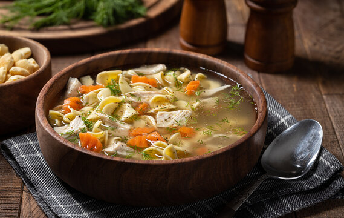

Chicken Noodle Soup
Home

Description
Chicken Noodle Soup is a hearty delicious meal. Great for cool winter
nights and for getting over a flu.
Ingredients
- Pasta
- Olive Oil
- Chicken Breasts
- Salt
- Pepper
- Onion Powder
- Garlic Powder
- Mustard Powder
- Italian Seasoning
- Dill
- Parsely
- Onion
- Garlic
- Carrots
- Celery
Steps
- Bring a pot of water to boil
- Add the pasta to the water
- Continiue to boil pasta until it is cooked to your likeness,
I prefer just a bit past al dente
- Add Olive Oil to a pre-heated pot
- While the oil heats up, dice the Onion, Celery, Garlic,
and Carrots and set aside
- Add the chicken breasts to the pot
- Season both sides of the chicken with Salt, Pepper,
Onion Powder, Garlic Powder, Mustard Powder, Italian Seasoning,
Dill, and Parsely
- Sear both sides of the chicken
- Remove the chicken from the pot and add the diced veggies
- Cover the pot and dice the chicken while the veggies cook
- Continue to cook the veggies until the onions turn golden brown
- Add the diced chicken to the pot
- Add the pasta to the pot
- Add the broth to the pot
- Season the soup with Salt, Pepper, Onion Powder, Garlic Powder,
Mustard Powder, Italian Seasoning, Dill, and Parsely